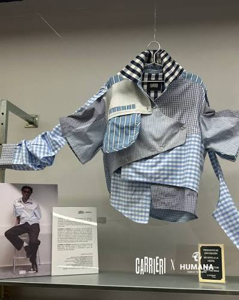

COS ACÚSTICCOS-PANTALLABALLS D’ANADA I TORNADAMEDIACIÓ DES DEL PRINCIPI
01 / SAMPLING · BARCELONETA
Una veu feta d’altres cossos
Com construeixo una manera singular de ballar amb allò que he après d’altres persones?
SAMPLING és un solo coreogràfic que parteix dels gestos, ritmes i imatges que han format el meu cos a través del breaking, el zapateado flamenc, el futbol i la cultura audiovisual. Els he rebut de crews, equips, amistats, escoles i pantalles. En posar-los en relació, busco una veu pròpia que faci perceptible aquesta memòria compartida.
El mostreig sonor consisteix a prendre un fragment i transformar-lo mitjançant el tall, la repetició o la superposició. Trasllado aquesta operació al cos: un pas, una respiració o un impacte es pot convertir en material que puc enregistrar, alterar i retornar a l’assaig. El so modifica l’acció següent; la imatge em retorna un moviment conegut des d’un altre temps o punt de vista.
COS / RETARD / REGISTRE PREVICOS / OPERADOR / ASSAIG
02 / SAMPLING · BARCELONETA
Barceloneta: començar la transformació
Arribo amb materials corporals, sonors i visuals de Digital Bodies. A Barceloneta vull descobrir quins conserven força, quins han perdut sentit i quins només poden continuar si es transformen. Tornar a executar-los, escoltar-los i observar-ne els registres em permetrà començar a decidir què necessita SAMPLING i generar noves proves.
La mediació participarà en aquesta transformació des del principi. Alternaré l’assaig individual amb un laboratori compartit: trobar-me amb altres cossos, experiències i maneres de mirar podrà desplaçar la lectura dels materials i obrir altres decisions de creació.
REVISARTRANSFORMARCOMPARTIR
03 / SAMPLING · BARCELONETA
Cos acústic i cos-pantalla
A / Cos acústic
Al laboratori de cos acústic exploraré suports, impactes, accents i pauses. Captaré el zapateado amb microfonia pròpia i transformaré els fragments sonors per observar com afecten el pes, el ritme i el moviment següent. El silenci i la interrupció també modifiquen allò que el cos sosté.
B / Cos-pantalla
Al laboratori de cos-pantalla provaré de projectar una gravació del meu cos en moviment sobre el meu cos quiet: ballar damunt de mi mateix. Variaré l’enquadrament, l’escala i el temps de la imatge per observar què es projecta sobre el cos i què projecta el cos amb la seva presència.
04 / SAMPLING · BARCELONETA
Balls d’anada i tornada
Un laboratori compartit
La circulació transatlàntica de gestos i ritmes vinculats al hip-hop i al flamenc travessa la meva pràctica. Si una veu pròpia es construeix amb allò après d’altres, la recerca necessita trobar-se amb altres cossos. Proposo trobades pensades conjuntament amb el centre per obrir un diàleg de mediació i retroalimentació del procés, setmanals durant el treball principal de sala o en format intensiu.
Les participants podran aportar gestos apresos en el ball, l’esport, les pantalles o la vida quotidiana i explicar-ne la procedència. Compartiré preguntes i materials oberts per explorar què canvia en transmetre’ls, repetir-los, escoltar-los o enregistrar-los. Busco que reconeguin les seves referències com a material creatiu, experimentin amb cos, so i imatge i prenguin decisions sobre propostes pròpies. Les preguntes i les pràctiques també podran sorgir del grup.
Per a la creació, aquestes trobades poden revelar lectures que no apareixen treballant sol: què reconeix una altra persona en un gest i què canvia en transmetre’l. Tornaré a l’assaig per revisar què conservo, transformo o descarto; després compartiré noves proves i decisions amb el grup per reprendre-les, discutir-les i transformar-les. Els registres i les anotacions donaran continuïtat al diàleg. El format i les sessions s’acordaran amb el centre i les participants.
Barceloneta se centra en la primera etapa del procés global de SAMPLING. Vull sortir-ne amb una primera selecció de materials, registres i decisions que permeti continuar la creació. L’assaig i el laboratori compartit ajudaran a reconèixer què sostenir, què retirar i quines relacions necessiten més temps.
Les etapes s’entrecreuen: el cos, el so i la imatge ja es relacionen en les primeres proves. El recorregut continua amb tres focus de treball:
2 · Desenvolupar el cos i la composició.
Aprofundir en el zapateado, les frases, les pauses, les durades i la transmissió; relacionar i transformar els materials seleccionats.
3 · Aprofundir en la relació amb la tecnologia.
Desenvolupar el diàleg iniciat entre cos, càmera, projecció, retard, so i llum, i entre interpretar i operar el dispositiu.
4 · Integrar i depurar.
Compondre el recorregut del solo, treballar les transicions, retirar capes i fer passades. L’estrena està prevista a l’Antic Teatre el novembre de 2027.
Temps i obertura
Proposo un marc de gener a novembre de 2027, amb assaig i primeres trobades concentrats al febrer i al març. Després voldria compartir registres i reprendre les trobades durant els meus retorns a Barcelona. La continuïtat, la freqüència i l’encaix d’aquesta organització en la residència s’acordaran amb el centre.
La mostra a Processos Oberts permetrà compartir materials i preguntes, amb data i format per acordar. Reprenc el vincle amb el centre a través d’INAUDIT, amb Adriano Galante, i del treball d’escolta al Museu d’Història de Catalunya el 2025.
06 / SAMPLING · BARCELONETA
El que aquestes proves poden obrir
Situacions del solo en desenvolupament. Orienten preguntes de recerca; l’ordre, la durada i l’articulació es decidiran durant la creació.
Les primeres proves ja relacionen cos, so i imatge. El recorregut escènic s’anirà component, aprofundint i depurant en les etapes següents.
Preparar i transformar
M’interessa que preparar l’espai pugui esdevenir acció coreogràfica. Col·locar una càmera, ajustar un micròfon o disposar una superfície permet observar les condicions en què apareixen les imatges i els sons.
El cos que organitza el dispositiu és també qui l’activa i queda exposat a la seva mirada. En les primeres proves observaré els ritmes i les durades d’aquestes accions, sense fixar encara com entraran a l’obra.
Preparació del dispositiu / registre previ de Digital Bodies.
Projectar el meu cos digital sobre el meu cos present
Una gravació en moviment pot trobar-se amb un cos que sosté la quietud. El volum, el vestuari i els plecs retallen i deformen la imatge. Quan em moc, també desplaço la superfície que la rep.
La diferència entre el temps enregistrat i el temps present permet provar quan reconec la meva dansa, quan es torna estranya i com aquesta imatge afecta el cos que l’observa i la rep.
Expandir el compàs
El zapateado permet concentrar l’atenció en el pes, els impactes i l’escolta. Entre les línies del projecte hi ha treballar amb fragments mostrejats de guitarra atonal i un pols que s’interromp: sostenir-ne els accents, desplaçar un cop o deixar espai al silenci.
La repetició i la pausa obren una pregunta sobre la durada i l’esforç: què passa amb el compàs quan el cos deixa de marcar-lo i el ritme continua en l’escolta.
Graduacions d’invisibilitat
La llum, la imatge, el mylar i el vestuari poden fer que la figura es confongui amb les superfícies de l’espai. De vegades es reconeix el cos sencer; d’altres apareix un fragment, una ombra o una empremta.
M’interessa observar què resta d’una presència quan deixa de distingir-se amb claredat. El seu desenvolupament i el seu lloc al solo formen part del treball de composició.
Vestuari i dispositiu: un paisatge en recerca
El projecte preveu transformar peces de roba existents mitjançant upcycling i explorar com la seva forma i tonalitat responen al moviment i a la projecció. El cos vestit pot esdevenir un paisatge que la imatge i la llum reescriuen.
Els registres mostren proves prèvies amb càmeres, projectors, so i superfícies reflectants. Són un arxiu visual del projecte complet; no descriuen un muntatge fix per a cada assaig de Barceloneta.
07 / EQUIP I ACOMPANYAMENT
Amb qui vull treballar
SAMPLING és un solo que es construeix en diàleg. Aquestes relacions aporten diferents mirades sobre el moviment, l'escolta, l'acció i el dispositiu.
Equip i acompanyaments desitjats per al desenvolupament global de SAMPLING. No es presenten com a presències confirmades a la residència de Barceloneta.
Adrián Vega
Autoria, direcció, interpretació i creació audiovisual. Disseny i programació de llum.
Durant els assajos també convidaré altres persones a interpretar materials per poder observar-los des de fora. Diferenciar allò que sento en executar els materials d’allò que percep qui els mira ajudarà a afinar presència, imatge i escolta. Aquestes col·laboracions formen part de l’horitzó del projecte complet. Les dates i les dedicacions es concretaran segons les etapes de creació. A Barceloneta proposo treball individual en diàleg amb el laboratori de mediació.
Acompanyament artístic i operació escènica
Marina Pravkina
Marina és la meva col·laboradora més propera i coneix profundament el meu moviment, les meves cadències i els meus processos de creació. Compartim una trajectòria de recerca entre cos, ritme i música, amb projectes com The Grooves Experience, presentat en espais com La Casa Encendida de Madrid. La seva pràctica com a coreògrafa i DJ aporta una escolta que connecta les decisions de moviment amb la composició sonora.
A SAMPLING vull comptar amb el seu acompanyament artístic durant la creació i treballar junts la relació entre interpretació i dispositiu. Jo assumiré el disseny i la programació d'il·luminació; Marina s'ocuparia de la seva execució durant la peça i, segons desenvolupem el dispositiu, del llançament d'algunes pistes a Ableton. El coneixement del meu llenguatge permetrà investigar com aquesta operació tècnica pot respondre al temps del cos.
Monica Mura és artista interdisciplinar i performer. El seu treball relaciona el cos, la memòria i la identitat; ha presentat la seva performance Cuntzertu pro sonallas al Museu Nacional Thyssen-Bornemisza.
La nostra col·laboració va començar en compartir uns dies de treball a la sala d'assaig. M'interessa especialment la precisió i l'economia de mitjans que trobo en la seva pràctica: partir d'una acció concreta i permetre que desplegui les seves possibilitats. Davant la meva tendència a acumular capes i provar nombroses variants, la seva mirada em pot ajudar a identificar què necessita cada escena i què puc retirar.
També vull explorar el contrast entre les nostres maneres de preparar l'acció. M'interessa la seva manera de construir acuradament un context i deixar espai al que passa a la trobada escènica. Treballar-hi pot ajudar-me a confiar en les condicions que preparo i a mantenir oberta la composició.
Adriano Galante és cantant, músic i fundador de Seward. La seva pràctica creua creació col·lectiva, acció sonora, paraula i performance. La nostra col·laboració en Inaudit, des de La Model fins a la seva adaptació a sala a Antic Teatre, ha construït un coneixement compartit de les meves cadències i de la meva manera de relacionar so, veu i cos.
A SAMPLING vull aprofundir amb ell en l'escolta com a part del moviment: com el cos produeix so, com respon a allò que escolta i com la veu pot participar en aquesta relació. M'interessa reprendre possibilitats que van quedar obertes a Inaudit i trobar quin desenvolupament poden tenir dins aquest solo.
Olga Mesa és coreògrafa i artista visual, amb una trajectòria que connecta dansa, performance i creació audiovisual. El cos operador forma part explícita de la investigació.
Per mi és un referent artístic amb qui comparteixo també l'experiència d'haver sortit d'Astúries per desenvolupar una trajectòria. Després de participar en un taller d'una setmana amb ella, vam iniciar un diàleg que m'agradaria continuar amb uns dies de treball a Estrasburg.
Vull investigar amb Olga com integrar la coreografia al dispositiu d'àudio i vídeo: com el cos balla, observa i opera, i com aquestes accions construeixen la composició. La seva mirada podria ajudar-me a precisar les relacions entre cos-pantalla, presència i imatge i reduir les capes conceptuals que no necessiten ser presents.
Les quatre aportacions es complementen: Marina des del coneixement continuat de la meva pràctica; Adriano des de l'escolta i la creació compartida; Monica des de l'acció concreta; i Olga des de la composició entre cos i dispositiu.
08 / DISPOSITIU EN RECERCA
Cos, imatge, so i llum en una mateixa composició
Planta orientativa del projecte complet, sense escala. El mylar s’estén pel lateral esquerre i cap al fons; els feixos dels quatre projectors es creuen sobre el cos i les superfícies. Càmera, micròfon, distribuïdor i control formen part del dispositiu en recerca. Posicions i distàncies s’ajustaran durant els assajos. Clica per ampliar.
La configuració prevista utilitza quatre projectors alimentats des d'una font central de vídeo mitjançant un distribuïdor 1 x 4. El senyal compartit crea un camp frontal d'imatge sincronitzat sobre el cos i les superfícies escèniques.
ORDINADOR / CAMBRA EN DIRECTE↓PROCESSADOR DE VÍDEO↓DISTRIBUÏDOR HDMI 1 x 4↓QUATRE PROJECTORS↓COS + SUPERFÍCIES ESCÈNIQUES
Espai
Caixa negra, foscor controlada, públic frontal, terra de dansa i posicions estables de projecció.
Imatge
Configuració prevista de quatre projectors, distribuïdor 1 x 4, ordinador, càmera i mylar. La disponibilitat i els recursos necessaris s'acordaran amb el centre.
So
Ableton Live, Push 2, Zoom H6, micròfons de contacte, micròfons de veu i equip de so de la sala.
Llum
La llum controla la visibilitat de la imatge i torna a l'espai físic tota la seva presència.
Adrián Vega treballa professionalment com a tècnic d'il·luminació. Pot previsualitzar, programar i adaptar el llenguatge lumínic des de dins del procés de creació. Les òptiques dels projectors, la brillantor, les distàncies de projecció i les posicions exactes es definiran durant el treball a sala. A Barceloneta, les primeres proves s’ajustaran als recursos acordats amb el centre; la planta i l’inventari descriuen l’horitzó del projecte complet.
Distribució a salaRegistre del dispositiu de recerca que serveix de referència per a aquesta planta.Inventari del dispositiuEines i materials de recerca: imatge, so, captació, suports, cablatge, calçat i superfícies reflectants.
09 / VESTUARI
El vestuari com a paisatge
El vestuari es desenvoluparà mitjançant upcycling, recuperant i transformant peces existents. La tonalitat i la forma s'elegiran per afavorir la projecció. La llum i les imatges transformaran la seva aparença, convertint el cos vestit en un paisatge en moviment. Provaré com responen els teixits a la llum i al moviment, atenent també la llibertat necessària per ballar i treballar el zapateado.
Aquestes referències visuals orienten la investigació del vestuari: barrejar codis i peces, transformar teixits i recompondre fragments. Provaré com aquestes operacions responen al moviment i a la projecció, per desenvolupar una silueta pròpia per a SAMPLING.
Barreja de codis i pecesPunt, roba esportiva i calçat ensamblats en una mateixa silueta.Transformar el teixitContrastos de color, talls i unions que fan visible la intervenció sobre la peça.Superposar materialsMalles, transparències i fragments de color per explorar diferents superfícies.

Recompondre una peçaCamises i patrons reunits en una construcció asimètrica.
10 / SAMPLING · BARCELONETA
Veure i escoltar el procés
Registres previs de Digital Bodies: el punt de partida d’una recerca que es transforma.
COS / IMATGE / PRESÈNCIASUPERFÍCIE / SO / ESCOLTAOBERTURA DE PROCÉS / REGISTRE PREVI